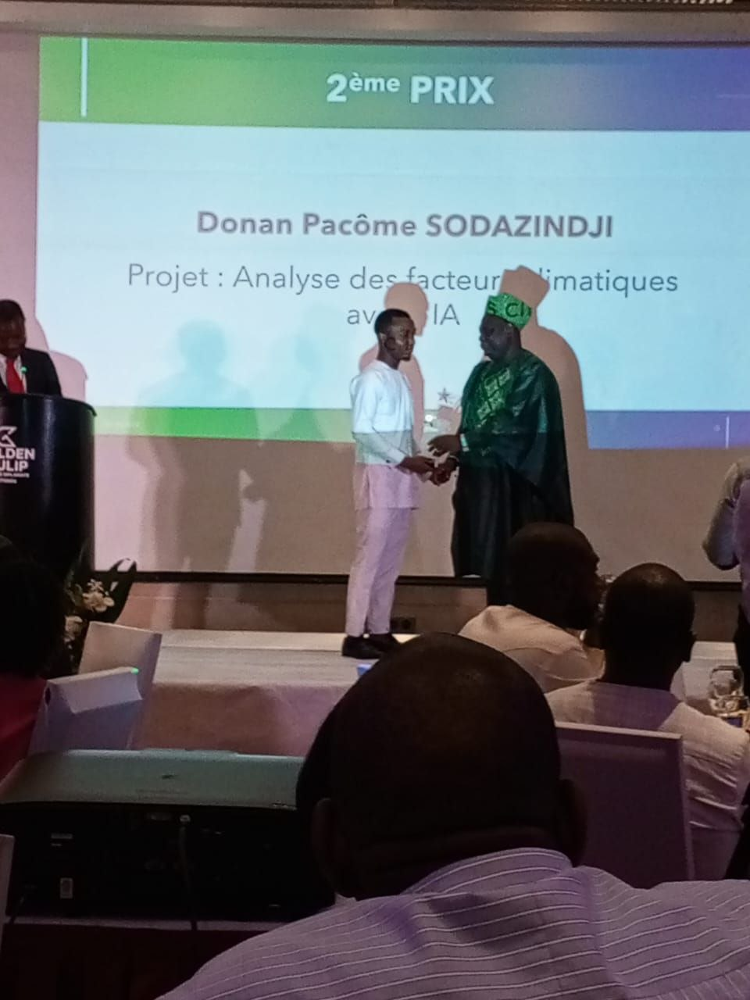
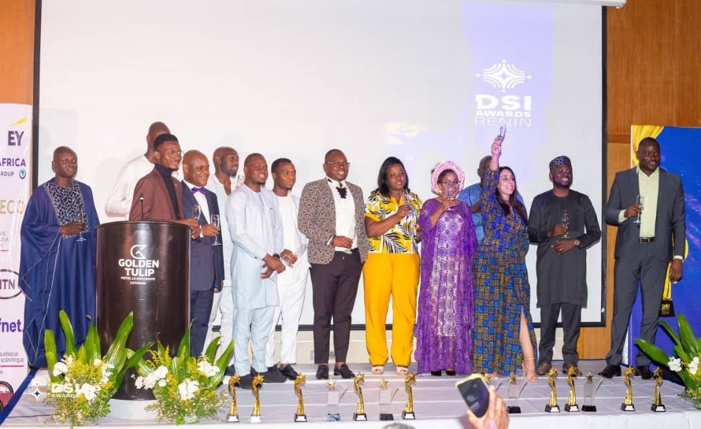

Banque d'images
Catalogue centralisé des nouveaux visuels du portfolio, organisé par usage pour faciliter leur réutilisation.
Portraits professionnels
Portrait alternatif
DSI Awards

Remise du trophée

Catalogue centralisé des nouveaux visuels du portfolio, organisé par usage pour faciliter leur réutilisation.

